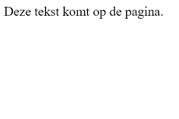

Programmeren
Er bestaan veel verschillende programmeertalen en deze worden voor veel verschillende doeleinden ingezet. Er zijn programmeertalen die op elkaar lijken, maar uiteindelijk heeft elke taal een eigen specialiteit. Het komt echter wel vaak voor dat talen in combinatie worden gebruikt, bijvoorbeeld HTML, CSS en JavaScript. Een simpele website of computerprogramma bestaat dan ook al snel uit honderden regels code.
HTML (met CSS): Level 1
HTML staat voor HyperText Markup Language en wordt gebruikt voor het maken van een webpagina. De meningen verschillen of HTML een programmeertaal te noemen is, omdat eigenlijk alleen de opmaak van een pagina beschreven wordt. HTML wordt vaak gezien als een ideale taal voor beginners, omdat er weinig code nodig is om al een resultaat te kunnen zien. De taal wordt vaak in combinatie met CSS gebruikt. CSS staat voor Cascading Style Sheets en biedt meer mogelijkheden voor de lay-out van een webpagina.
Uitleg:
Voor HTML-code wordt er gebruikt gemaakt van tags. Dit zijn korte woorden/tekens tussen punthaken (<,>), zoals < video >. Aan het begin van de regel gebruik je < > en aan het einde van een regel voeg je een slash toe . Deze geven dus aan waar een regel code begint en eindigt, maar het zorgen er ook voor dat bepaalde code een functie krijgt. Een stukje HTML-code begint altijd met < html > en eindigt altijd met < /html >. Dit zorgt ervoor dat alle regels ertussen ook daadwerkelijk als HTML-code gelezen wordt. Vervolgens komt de < head > van de pagina. Hierin staat bijvoorbeeld de titel die de webpagina krijgt. Deze is meteen de titel van het tabblad in je browser. Hiervoor gebruik je de tag < title >. Hierna volgt de < body >, oftewel de inhoud van de pagina. Dit is bedoeld voor de inhoud van de pagina. De tekst die je plaatst, is in principe altijd klein, zwart en in het lettertype Times New Roman. Er wordt hierbinnen geen rekening gehouden met enters, maar wel met spaties. In principe maakt het niet uit of je tekst in de head of body zet. Deze twee gebruik je vooral om de structuur van je pagina duidelijk en overzichtelijk te maken. De code hieronder bevat alle elementen die hierboven besproken zijn. Daaronder staat het directe resultaat van de code. Code: < html > < head > < title >Titel < /head > < body > Deze tekst komt op de pagina. < /body > < /html > Resultaat: 
Quizvraag:
Wat is het resultaat van de volgende code?
< html > < head > < title >Mijn eerste pagina < /head > Dit is mijn eerste pagina: < body > Ik ken nu de basis van Html. < /body > < /html >